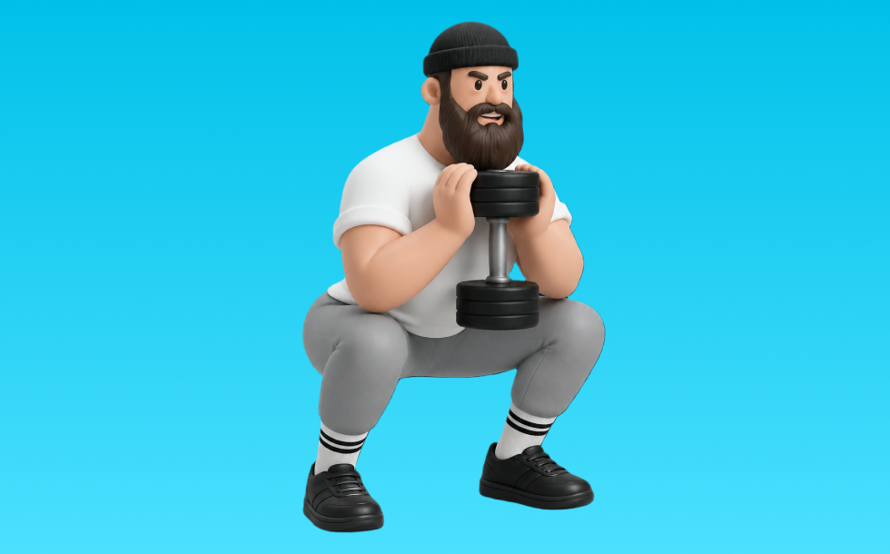

ゴブレットスクワット

ゴブレットスクワットとは、ダンベルを使って「しゃがんで立つ」動作で脚（大腿四頭筋、臀筋）＋体幹を鍛える種目です。可動域が広く、左右のバランスを整えやすいのが特徴で、背すじを保ってしゃがみ、足で床を押して立ち上がる動作を繰り返します。下半身の筋力・筋量アップが期待できます。
- 対象部位
- 脚
- 器具
- ダンベル
- 記録形式
- 重量・回数
- 別名
- ゴブレット
YouTube動画
-
ゴブレットスクワット(ダンベル)のやり方・正しいフォーム | 「腰が痛い」「持ち方がわからない」方はぜひ！
-
ケトルベルを使ったトレーニング｜ゴブレットスクワット【公式】
-
【ゴブレットSQ】スクワットの腰痛と股関節の痛みを改善するフォームと効果
-
【ケトルベル】 ゴブレット スクワット の正しいやり方
-
【自宅筋トレ】なかやまきんに君の正しいスクワットを学ぼう。
-
【筋トレ・脚】スクワット（脚全体・お尻）の基本フォーム / ゴブレットスクワット
-
球速アップの為のゴブレットスクワットのバリエーション
-
第63回 ダンベル、ケトルベルさえあればできる！ゴブレットスクワットで誰でも自然に正しいスクワットをマスターできる！
-
【バーベルスクワットが出来ない人向け】下半身を鍛えるゴブレットスクワットのやり方
-
【ゴブレット スクワット③】ケトルベルでシンプルに足交差を鍛える。フォームが崩れると足を鍛える前に腕が疲れてしまいます。
-
【筋トレ】ゴブレットスクワットのやり方ｌよくある間違えとなおし方
-
【ダンベルで行う】脚を鍛えたい人がやるべき種目3選を解説します
-
お尻の筋肉に効かせやすい【ゴブレットスクワット】 のやり方〜ダンベルを使って手軽に筋トレ〜
-
ダンベルスクワットのやり方｜正しいフォームを解説【公式】
-
【トレーニング界の王】ダンベルスクワットの正しいやり方で脚を追い込む
-
自宅で簡単にできる人気の筋トレ！「スクワット」の正しいやり方【リングフィット攻略】
-
【筋トレ】ダンベルのみで追い込む時短脚トレ3選！
-
【ダンベルスクワット】腰・膝を痛めず下半身に効かせるフォームのコツを解説！
YouTubeショート
-
スクワットの正しいやり方【筋トレ】
-
【解説‼️ゴブレットスクワット‼️】
-
【ダンベル】脚トレ３選
-
ダンベルを突き上げろ！スクワットのフォーム練習から強烈な脚トレまでできるゴブレットスクワット
-
【脚のトレーニング】ゴブレットスクワット お〜るあうと！トレーニングフォーム解説動画
-
ゴブレットスクワット（Goblet Squat）の基本フォームとやり方
-
15秒でわかるゴブレットスクワット #筋トレ
-
【逆に壊れる】スクワット初心者に多い膝を出さない間違ったフォーム #筋トレ #エクササイズ
-
正しいブルガリアンスクワット4つのポイント #筋トレ
-
スクワット初心者に多い腰を痛めるしゃがみ方と改善方法
-
スクワットでよくある間違い3つと改善方法【筋トレ】
-
【脚トレ】ゴブレットスクワットの正しいフォームを確認
-
足の太さに悩むならゴブレットスクワットから🔥#ダイエット #脚やせ
-
みなさんはスクワットどのようにされてますか？今回は持田選手がスクワットを伝授！次はどの種目の解説をやってほしいかコメントしてね！ #筋トレ #volix #トレーニング #ちょこっと惜しい
-
【怪我せず鍛えられる】僕の脚を強くしたスクワットルーティンを紹介します #筋トレ #脚トレ #スクワット #ボディビル #shorts
-
【種目解説動画】ゴブレットスクワット（基本）
-
ワイドスクワット #ジムトレ #筋トレ #ボディメイク
-
【スクワット】膝が痛い人によくある間違い #筋トレ #初心者
-
スクワットの姿勢づくりにもオススメ！ケトルベルゴブレットスクワット
-
ランジの正しいフォーム#shorts
動作方法
- 足幅を決め、体幹を固める
- 股関節と膝を同時に曲げて下ろす
- 足裏全体で床を押して立ち上がる
動作ポイント
- 膝とつま先の向きをそろえる
- 胸を落としすぎない
- かかとを浮かせない
ワンポイントアドバイス
- ウォームアップで股関節と足首を動かす
- 高重量の日はセーフティ設定を確認する
目的別回数設定
目的や体力に応じた一般的な目安です。無理のない範囲で調整してください。
- 筋力アップ
- 1〜5回
- 筋肥大
- 6〜12回
- 持久力アップ
- 13〜20回
YouTube動画について
動画はYouTubeの公開情報をもとに表示しています。内容は投稿者によるもので、Biggrによる監修ではありません。
アプリを入手
筋トレやトレーニングの記録はBiggrにお任せください。今すぐ無料で使い始められます。